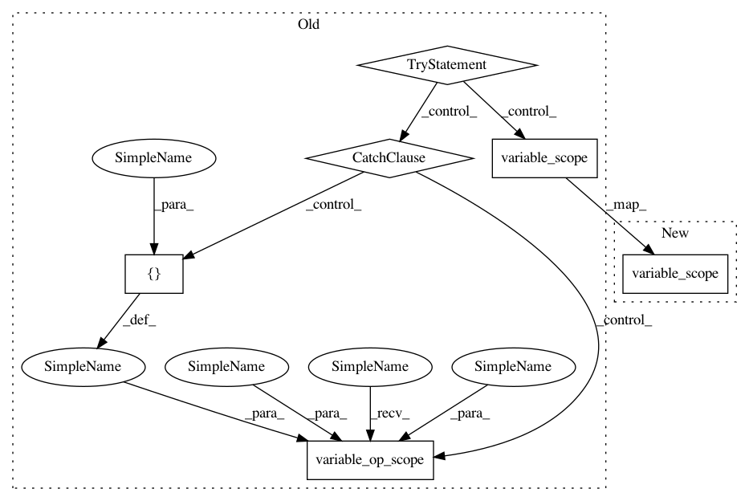

fd1c11f06438db0f586e6c552010145f0aa3e82a,tflearn/layers/conv.py,,residual_bottleneck,#,1221
Before Change
in_channels = incoming.get_shape().as_list()[-1]
// Variable Scope fix for older TF
try:
vscope = tf.variable_scope(scope, default_name=name, values=[incoming],
reuse=reuse)
except Exception:
vscope = tf.variable_op_scope([incoming], scope, name, reuse=reuse)
with vscope as scope:
name = scope.name //TODO
for i in range(nb_blocks):
After Change
resnet = incoming
in_channels = incoming.get_shape().as_list()[-1]
with tf.variable_scope(scope, default_name=name, values=[incoming],
reuse=reuse) as scope:
name = scope.name //TODO
In pattern: SUPERPATTERN
Frequency: 3
Non-data size: 6
Instances
Project Name: tflearn/tflearn
Commit Name: fd1c11f06438db0f586e6c552010145f0aa3e82a
Time: 2017-02-15
Author: aymeric.damien@gmail.com
File Name: tflearn/layers/conv.py
Class Name:
Method Name: residual_bottleneck
Project Name: tflearn/tflearn
Commit Name: fd1c11f06438db0f586e6c552010145f0aa3e82a
Time: 2017-02-15
Author: aymeric.damien@gmail.com
File Name: tflearn/layers/core.py
Class Name:
Method Name: highway
Project Name: tflearn/tflearn
Commit Name: fd1c11f06438db0f586e6c552010145f0aa3e82a
Time: 2017-02-15
Author: aymeric.damien@gmail.com
File Name: tflearn/layers/conv.py
Class Name:
Method Name: residual_block